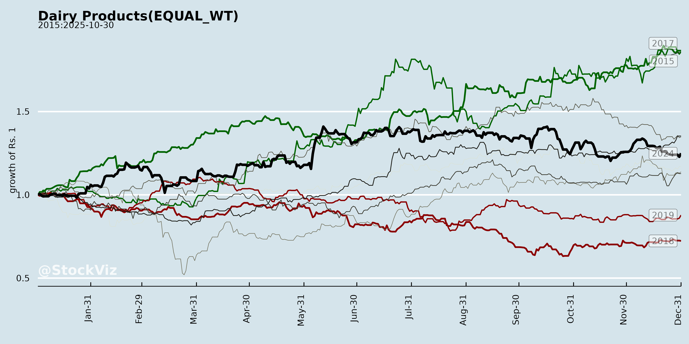
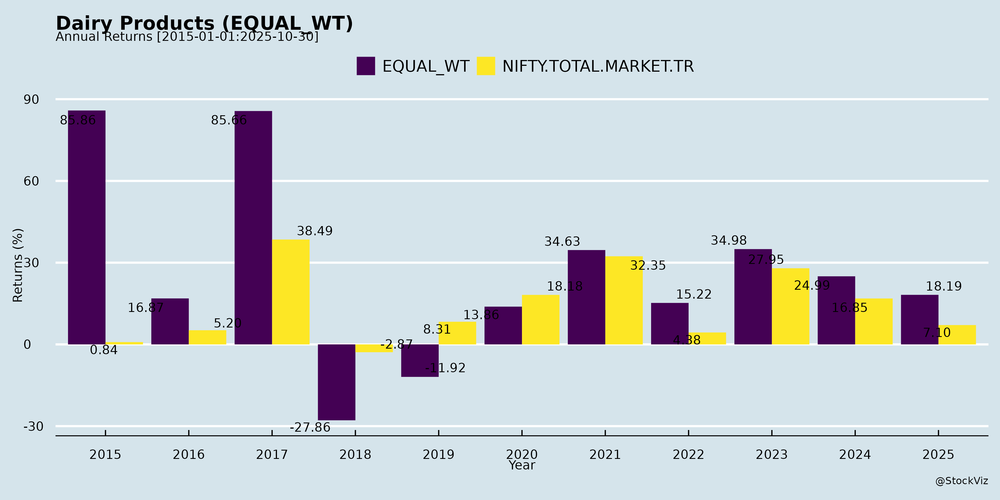
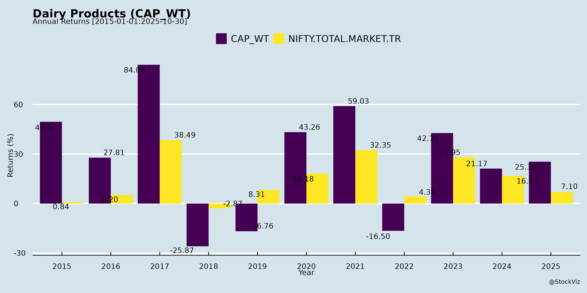
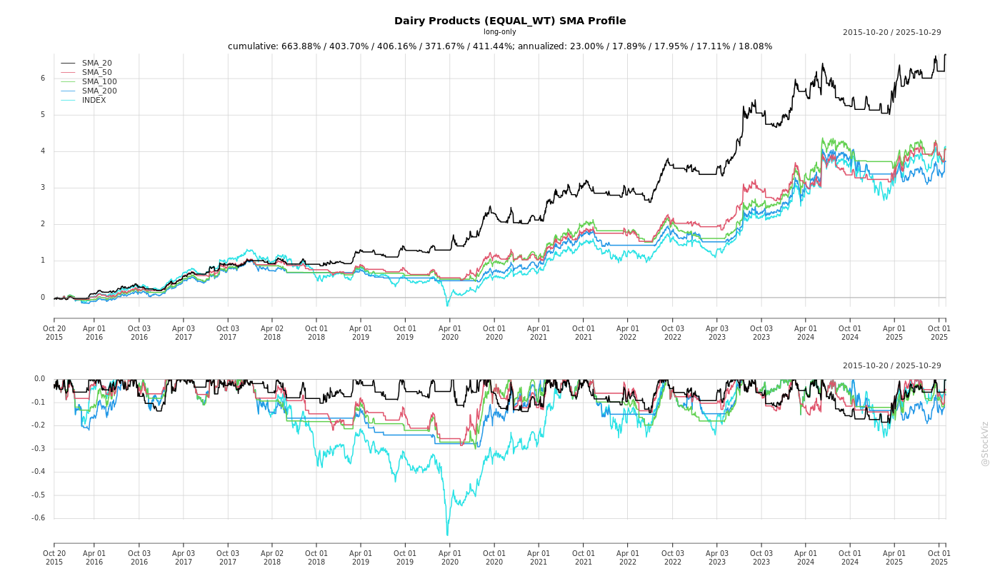
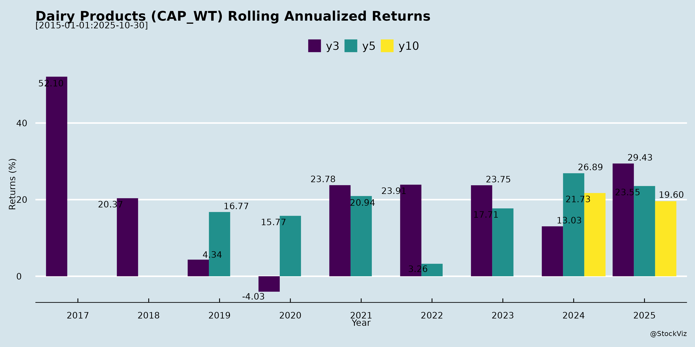

Dairy Products
Industry Metrics
February 20, 2026
Annual Returns



Cumulative Returns and Drawdowns
SMA Scenarios


Current Distance from SMA
Rolling Returns


Market Cap
EBIT (% of Industry Total)
Revenue (% of Industry Total)
AI Summaries
Analyst
asof: 2025-11-30
Summary Analysis of Indian Dairy Products Sector
Based on the provided transcripts and filings from key players (Hatsun Agro, Dodla Dairy, Parag Milk Foods; Heritage Foods has minimal data), the Indian dairy sector exhibits robust fundamentals amid GST tailwinds and premiumization trends. However, it faces procurement volatility and seasonality. Q2 FY26 shows revenue growth (10-16% YoY), stable EBITDA margins (~9%), and volume gains (10-14%), driven by core categories (ghee, cheese, paneer) and new-age nutrition. Below is a structured analysis.
Tailwinds
- GST Reforms (Major Booster): Rate cuts (e.g., ice cream 18%→5%, paneer tax removed) reduce costs by ~70% on key inputs (Hatsun: GST on butter/SMP down from ₹100→₹30 per 25L milk). Benefits shared with farmers/consumers, stimulating rural spending and demand elasticity (8-9% price cuts possible). Passed-on benefits enhance affordability, especially for VAP.
- Formalization & Premiumization: Shift from unorganized (70-80% market) to branded/organized (Parag: 90% revenue from VAP; Dodla: VAP ex-bulk +22% YoY). Brands command premiums (Parag: 20% over rivals in cow ghee); loyalty drives inelastic demand.
- Category Tailwinds: Core (ghee/cheese/paneer) growing double-digits (Parag: 14% volume, 59% revenue); protein awareness fuels new-age (Parag Avvatar: 6x H1 growth; Dodla Pride of Cows expansion).
- Procurement & Rural Boost: Farmer incentives (half GST savings) encourage productivity; direct farmer ties (Dodla/Hatsun).
- Marketing & Channels: Brand investments (TV/OTT sponsorships, quick-commerce) + capex completion aid penetration (Hatsun new markets; Dodla Maharashtra).
Headwinds
- Procurement Volatility: Erratic rains/lean season reduced supply (Dodla: 19.5 LLPD, +13% YoY but pressured; Parag: milk inflation 16% YoY to ₹38/L; Hatsun: farmer diversion to crops). Sequential cost hikes (Dodla: +₹1-1.5/L in Q3).
- Seasonality: H1 > H2 (summers boost curd/lassi; winters stable/lower VAP). Bulk sales strategic but volatile (Dodla: ₹28 Cr vs. ₹167 Cr YoY).
- Cost Pressures: Employee/freight/A&P up (Dodla: +25% employee, +18% other expenses); OSAM acquisition drags margins (2-3% EBITDA).
- Price Hike Resistance: Passing 16% inflation challenging despite pricing power; quick-commerce erodes unorganized but intensifies branded competition.
Growth Prospects
- Near-Term (FY26): 10-20% revenue growth (Hatsun: 20%; Parag: 14-16%; Dodla: 6-8% India standalone). Volumes: 10-14% core, 20-79% new-age/VAP ex-bulk. H2 festive/GST demand + capacity utilization (post-capex).
- Medium-Term (2-3 Yrs): VAP mix to 25-30% (Dodla); protein/snacking explosion (Parag: 20% portfolio target); geographic expansion (South/North/East; Dodla Africa/Orgafeed +20-28%). Organized share to rise (ghee/cheese/paneer categories double-digit). Visionary targets: Parag ₹10,000 Cr.
- Long-Term: Per capita consumption rise (4-5% market growth); health/nutrition (whey/protein bars); exports (Dodla Africa +22% YoY).
| Company | Q2 Revenue (₹ Cr) | Vol Growth | EBITDA Margin | Outlook |
|---|---|---|---|---|
| Hatsun | N/A (Interview) | N/A | N/A | 20% FY26 |
| Dodla | 1,019 | 12.6% milk | 9.1% | 6-8% India; 8-10% margins |
| Parag | 1,008 | 10% total | 8.9% | Double-digit EBITDA |
Key Risks
- Supply-Side (High): Weather/El Niño disrupting procurement (flush season delayed); scaling from 15-20 LLPD to 40 LLPD (Parag).
- Execution (Medium-High): Distribution depth (GT/modern/quick-com); acquisitions (Dodla OSAM margins to 8-9% in 2-3 yrs); capex integration.
- Margin Compression (Medium): Input inflation > pricing (16% vs. 6% hikes); A&P ramp-up; subsidy/incentive volatility (Parag Maharashtra ~₹85 Cr).
- Competition (Medium): Amul/nationals (protein entry); regionals (South focus); unorganized adulteration/resurgence.
- Macro/Financial (Low-Medium): Debt/gearing (Parag 0.4x improving); cash flows tied to working capital; GST input credit losses (paneer).
Overall Outlook: Bullish with GST as catalyst (revolution per Hatsun). Sector poised for 12-15% CAGR; focus on brands/protein de-risks commodity cycles. Monitor Q3 procurement for flush recovery. Risks mitigated by pricing power and VAP shift.
Financial
asof: 2025-11-30
Summary Analysis of Indian Dairy Products Sector (Based on Q3 FY25 Financial Disclosures)
The analysis draws from recent unaudited financial results and announcements of key listed players: Hatsun Agro (HAP), Dodla Dairy, Heritage Foods, Vadilal Industries, and Sheetal Cool Products. These reflect the sector’s performance for quarters/nnine months ended Dec 31, 2024 (Q3 FY25), highlighting resilience amid seasonal demand (ice creams) and core dairy growth. Overall, the sector shows revenue expansion (10-30% YoY in most cases) driven by volume recovery post-monsoon, but margins are pressured by input costs. Standalone profits grew 20-50% YoY for most, with consolidated figures boosted by subsidiaries.
Tailwinds (Positive Drivers)
- Robust Revenue Growth:
- Dodla: Standalone rev ₹255 cr (9M), up ~17% YoY; Consolidated ₹288 cr (9M), up ~18%.
- Heritage: Standalone rev ₹505 cr (9M), up ~80% YoY (dairy segment dominant at ₹304 cr).
- Vadilal: Standalone rev ₹780 cr (9M), up ~9%; Consolidated higher with exports.
- Sheetal: Rev ₹510 cr (Q3), stable YoY amid ice cream peak season.
- HAP: Implied stability (no major red flags post-correction).
- Profitability Improvement: PAT up 20-60% YoY (e.g., Dodla 9M PAT ₹190 cr; Heritage ₹148 cr). Driven by operational efficiencies, other income (dividends/subsidies), and lower finance costs.
- Capex & Expansion: Dodla approved ₹280 cr for Maharashtra plant (internal accruals/debt). Heritage’s dairy/renewable segments expanding. Signals capacity addition for 10-15% volume growth.
- Govt Incentives: Sheetal booked ₹489L power subsidy + ₹1,015L SGST subsidy under Gujarat policy, boosting other income ~₹181 cr (9M).
- Diversification: International ops (Dodla: Uganda/Kenya/Singapore; Vadilal: USA/Australia) contribute 10-15% rev. Heritage adds feed/renewables.
Headwinds (Challenges)
- Input Cost Volatility: High material costs (60-70% of expenses): Dodla cost of materials ₹169 cr (9M); Heritage ₹216 cr. Milk price fluctuations and inventory builds (e.g., Heritage +₹39 cr change in inventories) squeezed margins to 5-8%.
- Finance & Depreciation Burden: Elevated (e.g., Dodla finance ₹9L; Heritage ₹11 cr 9M). Depreciation up 10-15% YoY due to prior capex.
- Seasonal/Operational Hiccups: Ice cream-focused (Vadilal/Sheetal) saw Q3 rev dips vs Q2 (e.g., Vadilal Q3 ₹145 cr vs ₹233 cr). HAP’s XBRL revenue typo highlights reporting errors.
- Margin Pressure: EBITDA margins ~8-12% (e.g., Dodla Q3 12%; Heritage ~6%). Employee/other expenses up 10-20% YoY.
Growth Prospects
- High Potential (10-20% CAGR FY25-27):
- Dairy demand: Rising per capita consumption (urbanization, health trends). Branded ice creams/milk products growing 15%+ (Hatsun/Dodla/Heritage leaders).
- Capex Pipeline: Dodla’s ₹280 cr new plant; Heritage dairy/feed expansion. Potential for 20-30% capacity addition.
- Exports & Value-Add: Dodla consolidated rev up (subsidiaries ₹37 cr Q3); Vadilal overseas subs.
- Subsidies/Policy: Gujarat schemes aiding Sheetal-like players; renewable energy (Heritage) for cost savings/ESG.
- M&A/Organic: Strong balance sheets (low debt in Dodla/Heritage) support acquisitions in fragmented market.
- Outlook: Sector rev growth ~12-15% FY25, led by Q4 peak. PAT CAGR 15-20% with margin recovery.
Key Risks
| Risk Category | Details | Impacted Companies | Mitigation |
|---|---|---|---|
| Regulatory/Legal | Ongoing NCLT litigations (Vadilal promoter disputes); qualified audit reports on personal expenses (₹0.5 cr). HAP XBRL errors. | Vadilal (high); HAP | Legal resolutions pending (NCLAT hearing Mar 2025). |
| Commodity Price Volatility | Milk/raw material ~65% costs; weather/inflation risks. | All (esp. Dodla/Heritage) | Backward integration (farmer ties in Dodla/Heritage). |
| Execution/Capex | New plants delay (Dodla ₹280 cr); high depreciation. | Dodla, Heritage | Internal funding reduces debt risk. |
| Subsidies Dependence | Sheetal’s ₹15 cr subsidies (one-time?); policy changes. | Sheetal | Diversify income. |
| Seasonality/Liquidity | Ice cream Q3/Q4 heavy; working capital strain. | Vadilal, Sheetal | Inventory management; low debt (most net cash positive). |
| Competition/Fragmentation | Unorganized 60% market; price wars. | All | Branding/capex edge for listed players. |
Overall Sector Verdict: Positive (Buy/Hold) with tailwinds from demand/capex outweighing headwinds. Growth prospects strong (12-18% rev CAGR), but monitor litigations (Vadilal-specific drag) and milk prices. Average ROE ~15-20%; PE 20-30x justified for leaders like Dodla/Heritage. Risks contained via strong farmer networks and low leverage.
General
asof: 2025-11-30
Summary Analysis of Indian Dairy Products Sector
Based on the provided documents from key players (Hatsun Agro, Dodla Dairy, Heritage Foods, Parag Milk Foods, Vadilal Industries), the Indian dairy sector shows robust fundamentals driven by branded consumer products, value-added shifts, and infrastructure investments. However, it faces regulatory, competitive, and external challenges. Below is a structured analysis of headwinds, tailwinds, growth prospects, and key risks.
Tailwinds
- Brand & Distribution Strength: Hatsun emphasizes three ₹1,000 Cr+ brands (milk, ice cream, curd/yogurt) and 4,300 own retail outlets (18-20% sales), enabling cost compression (double industry EBITDA) and direct consumer access. This “piggyback” model supports new launches without heavy capex.
- Value-Added Product Shift: ~55:45 dairy-to-value-added ratio at Hatsun (value-added growing faster); paneer/ice cream leadership; high-protein launches in 3-6 months. Organized players benefit from refrigerated chains (Hatsun 100% for milk/curd).
- ESG Momentum: Dodla’s ICRA ESG Rating (70/100, “Good”) highlights strong social (78) and environmental (68) practices, aiding investor appeal and sustainability compliance.
- Leadership & Innovation: Vadilal’s new CEO (ex-HUL ice cream head) brings FMCG expertise for growth/innovation; Hatsun’s product development center supports pipeline evolution.
Headwinds
- Infrastructure Intensity: Scaling requires massive capex (Hatsun: ₹1,200 Cr in 7-8 years for cold chain/freezers); niche products risk spoilage without it, limiting smaller players.
- Competition: Legacy (Amul), regionals (South India peers), and new entrants (e.g., Milky Mist IPO) pressure volumes. Hatsun leads privates but notes Horeca’s discounting/credit risks.
- Regulatory Scrutiny: Heritage’s ₹10L penalty (2018 paneer sample: low fat, missing labels) underscores quality/labeling compliance burdens.
- External Factors: Weather/COVID-like disruptions (Hatsun); phased market growth (8-10%) lags company targets.
Growth Prospects
- Revenue & Market Expansion: Hatsun targets >17.5% QoQ growth (vs. 8-10% market); ice cream franchises to 1,200 (from 820-834), Ibaco to 280-300, milk/curd outlets to 5,000 (from 4,000). Paneer: double-digit growth (South India surge via Horeca/home cooking).
- Product/Geographic Push: High-protein entry (Hatsun); East/West expansion (Odisha/Maharashtra to Kolkata via Milk Mantra). 98% “value-added” (branded consumer sales) at Hatsun redefines sector margins.
- Category Tailwinds: Protein/curd/yogurt/ice cream dominance; organized share rising as home-made shifts to branded.
- Overall Outlook: 10-15%+ sector growth feasible for leaders with distribution (Hatsun outpacing peers via infra/brands).
Key Risks
| Risk Category | Details | Mitigation/Evidence |
|---|---|---|
| Regulatory/Quality | FSSAI penalties (e.g., Heritage paneer fat/labeling); potential recalls. | Appeals (Heritage); strong compliance (Dodla ESG). |
| Operational/Supply Chain | Refrigeration dependency; scaling lag for niches; Horeca receivables. | Hatsun’s infra/own outlets; clean balance sheet. |
| Competitive | Amul dominance; IPO entrants; regional fragmentation. | Brand leadership (Hatsun top private milk/ice cream). |
| Macro/External | Weather/pandemics; raw milk volatility (implied). | Diversified portfolio; no major headwinds foreseen (Hatsun). |
| Financial | High capex; margin pressure from discounting. | Superior EBITDA via distribution (Hatsun double industry). |
Overall Sector Summary: Bullish medium-term (value-added/organized shift, 10-20% growth for leaders), but risks tilt toward execution (infra/compliance). Hatsun exemplifies strengths (distribution/brands); others signal ESG/leadership positives amid isolated regulatory hiccups. Investors should prioritize companies with cold-chain moats and clean finances.
Investor
asof: 2025-11-30
Analysis of Indian Dairy Products Sector
Using the provided transcripts and announcements from key players (Hatsun Agro Product Ltd - HAPL, Dodla Dairy Ltd, Heritage Foods Ltd, and Parag Milk Foods Ltd) as primary inputs, below is a structured analysis of the Indian Dairy Products sector (focusing on organized players). Insights are drawn from Q2 FY26 earnings calls (Nov 2025), an HAPL interview (Sep 2025), and related disclosures. The sector is characterized by strong branded/organized growth amid commodity volatility, with companies emphasizing value-added products (VAP), premiumization, and nutrition.
Headwinds (Challenges Pressuring Margins and Operations)
- Procurement Cost Inflation and Supply Volatility: Milk prices rose 16% YoY (Parag) and ~8% YoY (Dodla, from INR34.64 to INR37.29/L). Erratic rains, lean seasons, and farmer diversion to agriculture reduced flush season supply (Dodla: procurement at 19.5L LPD vs. targets; Parag/Hatsun note similar pressures). October-November 2025 saw further firmness (Dodla).
- Seasonal Fluctuations: H1 lean/weak weather hurt volumes (Dodla VAP degrowth sequentially); H2 winter may reduce curd/buttermilk demand.
- Margin Pressures: Employee costs up 26% (Dodla, due to increments/headcount/OSAM), freight/other expenses up 18% (ad spends, B2C shift). Gross margins stable/improved slightly (Dodla 27.7%, Parag steady) but EBITDA dipped sequentially in some cases.
- Execution Risks in Expansions: New plants/markets (Dodla Maharashtra, OSAM integration at 2-3% margins), capex (Dodla INR77 Cr H1) face ramp-up delays.
- Competition Intensity: Unorganized (high adulteration in paneer/dahi), regionals (South-focused), and nationals (Amul entering protein). Quick commerce favors unorganized/small brands (Hatsun).
Tailwinds (Supportive Factors Driving Resilience)
- GST Reforms (Sep 2025 Notification): Ice cream 18%→5%, paneer tax-exempt (despite ITC loss), benefits ~70% savings on butter/SMP (Hatsun). Companies passing 50% to consumers/farmers, boosting affordability/demand (Hatsun: 8-9% price cuts; Parag/Dodla passed on). Stimulates rural spending/VAP uptake.
- Shift to Organized/Branded: 90% portfolios VAP for Parag; Dodla VAP ex-bulk up 22% YoY. Brands command premiums (Hatsun: 4 brands #1-3; Parag 20% premium in cow ghee). Formalization in North (Bihar/Jharkhand) and dahi/paneer.
- Product Mix Shift: Core (ghee/cheese/paneer) up 14% volume (Parag); VAP 27% of sales (Dodla). New-age (protein/snacks) exploding (Parag Avvatar/Pride of Cows +79% YoY, 9% revenue).
- Marketing/Channels: Brand salience via TV/OTT (KBC, Super Dancer - Parag; regional TV - Dodla/Hatsun). Quick commerce/modern trade growing (Pride of Cows on Blinkit).
- Deleveraging/Financial Health: Parag net debt down INR125 Cr (0.4x equity); Dodla cash INR596 Cr, debt-free core.
Growth Prospects (Opportunities for Expansion)
- Volume/Revenue Acceleration: Hatsun eyes 20% next year (GST + capex bloom); Parag H1 14% YoY (INR1859 Cr), vision INR10,000 Cr (3-5 yrs); Dodla 13% like-for-like core, 6-8% H2 India standalone. Sector CAGR 12-13% (Hatsun historical) to mid-teens+.
- VAP/Premium Nutrition: Protein market booming (80% Indians deficient; Parag Avvatar 6x H1 growth, new wafers/snacks); cheese/paneer/ghee formalization (Parag #2 cheese 35% share). Dodla paneer/curd-led VAP +22%.
- Geographic/Market Expansion: New regions (Dodla Maharashtra/Telangana; Parag deep South/North; Hatsun Mah/Tel). Africa/Orgafeed +21-28% (Dodla). Quick commerce/D2C for premium.
- Procurement Efficiency: +13% YoY (Dodla); farmer incentives (Hatsun passing GST benefits).
- Category Tailwinds: Ice cream/paneer demand surge post-GST; health awareness (protein literacy).
| Company | Q2 FY26 Revenue (INR Cr) | Vol Growth | EBITDA Margin | Key Driver |
|---|---|---|---|---|
| HAPL | N/A (Interview) | N/A | N/A | GST-led 20% FY27 |
| Dodla | 1019 | 13% (proc) | 9.1% | VAP + OSAM |
| Parag | 1008 | 10% | 8.9% | Core +79% new-age |
Key Risks
- Weather/Commodity Cycles: El Niño/rains disrupting flush (Dodla: Oct procurement lag); pricing mismatches (bulk inventory buildup).
- Price Hike Elasticity: Passing 16% milk inflation risks volume loss (despite brand power); cooperatives hikes may force rollbacks (Hatsun).
- Execution/Integration: OSAM margins low (Dodla 2.6%); capex digestion (Maharashtra).
- Competition/Market Share: Amul protein entry (Parag unconcerned); unorganized dominance (70-80% dairy).
- Macro/Regulatory: Rural slowdown, GST ITC changes (paneer), subsidy volatility (Parag Maharashtra incentives ~INR85 Cr, tapering).
- Financial: Debt (Parag 1.4x EBITDA), working capital from bulk/seasonality.
Summary
The Indian organized dairy sector is poised for robust 15-20% growth over FY26-28, fueled by GST tailwinds (demand stimulation, 5-9% price cuts), VAP/premiumization (protein/cheese/paneer leading), and formalization (unorganized→organized shift). Tailwinds like brand power and new-age (9-20% portfolio share) offset headwinds from 8-16% procurement inflation and weather volatility, keeping EBITDA margins stable at 8-10%. Growth prospects center on geographic penetration, nutrition (Avvatar-like), and efficiency (procurement +10-13%). Key risks include supply disruptions (high), execution (medium), and competition (medium), but strong cash flows/deleveraging provide buffers. Overall, bullish outlook for branded players (Hatsun/Parag leaders), with sector outpacing 4-5% per capita consumption growth. Heritage’s limited disclosure adds no incremental sector view.
Meeting
asof: 2025-11-30
Analysis of Indian Dairy Products Sector (Based on Q2 FY26 Financial Results)
The analysis is derived from unaudited H1 FY26 (ended Sep 30, 2025) financial results and announcements of key listed players: Hatsun Agro (HAP), Dodla Dairy, Heritage Foods, Parag Milk Foods, Vadilal Industries, and Sheetal Cool Products (AGM outcomes). The sector shows resilience with revenue/PAT growth amid seasonal demand, but faces input cost pressures. Overall, H1 revenue grew ~8-15% YoY across peers, driven by volume recovery post-monsoon.
Tailwinds (Positive Drivers)
- Robust Revenue & Profit Growth: HAP standalone revenue +10.5% YoY to ₹4,916 Cr, PAT +36% to ₹265 Cr. Dodla standalone +0.2% to ₹17,553 Cr, PAT +2% to ₹1,161 Cr (consolidated +6% revenue, PAT flat). Vadilal consolidated +11.5% revenue to ₹847 Cr, PAT -14% but strong margins. Parag ~stable/growing volumes.
- Improved Working Capital: Sharp inventory drawdowns (HAP -43% inventories, Dodla -18%, Vadilal -28%), boosting cash from ops (e.g., Dodla ₹1,469 Cr, Vadilal ₹125 Cr).
- Margin Resilience: EBITDA margins stable ~10-12% despite costs; HAP PBT margins up to 7.4%.
- Shareholder Returns: HAP interim dividend ₹6/share (₹134 Cr), Dodla dividend ₹2/share.
- Strategic Moves: Heritage acquiring 51% in “Get-A-Way” (healthy desserts, ₹18 Cr FY25 turnover) for diversification. Dodla acquired Osam Dairy (₹271 Cr deal).
Headwinds (Challenges)
- QoQ Declines: HAP Q2 revenue -6% QoQ to ₹2,381 Cr (seasonal?); Vadilal Q2 flat.
- Rising Expenses: Employee costs +10-15% YoY (HAP +11%, Vadilal +8%); finance costs elevated (HAP ₹81 Cr). Raw milk/material costs ~60-70% of revenue.
- Inventory Volatility: Some buildup (Parag +30%), signaling demand uncertainty.
- Margin Pressure: Dodla PAT flat YoY despite revenue growth; Vadilal PAT down 14% on higher opex.
- Capex Drag: Heavy investments (Dodla ₹233 Cr PPE, Vadilal ₹48 Cr), straining cash (net debt steady/rising in some).
Growth Prospects
- Demand Tailwinds: Post-monsoon recovery; urban/rural consumption of value-added products (ice creams, yogurt). HAP/Dodla leveraging branded portfolios.
- Diversification: Shift to health-focused (keto/protein desserts via Heritage/Dodla acquisitions); exports/international ops (Dodla Uganda/Kenya revenue +24% YoY).
- Capacity Expansion: Ongoing capex (HAP PPE +8%, Dodla +11%); mergers pending (HAP-Milk Mantra, Vadilal promoter cos).
- Volume-Led Growth: 10-15% YoY topline potential FY26; EBITDA CAGR 15% projected on efficiencies.
- M&A Pipeline: Inorganic bets on adjacencies (frozen desserts, healthy snacks).
Key Risks
| Risk Category | Description | Impact from Filings |
|---|---|---|
| Input Cost Volatility | Milk prices fluctuate 20-30% annually; 60%+ of COGS. | HAP materials 60% of expenses; Dodla raw mat +15% YoY. |
| Demand Seasonality | Q3 weak (winters); monsoon disruptions. | HAP Q2 dip; inventories signal caution. |
| Regulatory/Execution | NCLT approvals for mergers (HAP, Vadilal); SEBI compliance. | Pending schemes; no adjustments booked. |
| Debt & Forex | Net debt steady (HAP ₹1,525 Cr, Dodla low); intl. ops exposed. | Dodla forex gains; Vadilal borrowings +13%. |
| Competition | Unorganized 50%+ market; pricing wars. | Margins squeezed in Q2 for some. |
| Capex Overhang | High investments (₹200-700 Cr H1); ROI delays. | Cash burn in investing activities. |
Summary Outlook: Sector FY26 growth ~12-15% revenue (volumes + pricing), supported by branded push and diversification. Tailwinds from ops efficiency outweigh headwinds, but raw material inflation key watch. Bullish on leaders like HAP/Dodla (strong FCF); monitor debt in smaller peers. Risks mitigated by domestic staples demand, but exogenous shocks (milk supply) loom.
Press Release
asof: 2025-11-30
Indian Dairy Products Sector Analysis
Based on Q2/H1 FY26 results and announcements from Dodla Dairy, Parag Milk Foods, Heritage Foods, and Vadilal Industries.
Tailwinds (Positive Factors)
- Robust Revenue & Volume Growth: Dodla crossed ₹10,000 Mn quarterly revenue (2nd time, +2.1% YoY); Parag hit record ₹1,008 Cr (+16% YoY, 10% volume growth). Milk procurement/sales up 12-13% YoY across players.
- Margin Expansion via Product Mix: Gross margins improved (Dodla +200 bps to 27.7%; Parag to 25.8%). Shift to high-margin VAPs (curd, ghee, lassi, flavoured milk, ice cream) excluding low-margin bulk sales (Dodla VAP excl. bulk: 27% vs 22% YoY).
- Premium & Health-Focused Expansion: Strong growth in new-age segments—Parag’s Pride of Cows/Avvatar +79% YoY (9% of sales); Heritage’s 51% acquisition in Get-A-Way (high-protein, no-sugar ice creams/desserts). Orgafeed (Dodla) +28% YoY.
- Deleveraging & Efficiency: Parag reduced net debt by ₹125 Cr (to 0.4x equity); operational cash flow ₹99 Cr in H1.
- Brand & Distribution Push: Festive campaigns, influencer tie-ups, quick-commerce (Parag, Heritage); Dodla’s 968 parlours.
- Policy Support: Anticipated GST 2.0 rate cuts to boost affordability/demand (Parag commentary).
- Professionalization: Vadilal’s first non-family CEO (ex-HUL) for innovation/GTM.
Headwinds (Challenges)
- Raw Milk Inflation: Procurement prices up 16% YoY (Parag avg. ₹38/L); lean season/erratic rains pressured supply, outpacing realizations (Dodla).
- Expense Inflation: Employee costs (increments, OSAM hires), A&P, transport/overheads up due to mix shift and new hires (Dodla EBITDA -3.6% YoY).
- Acquired Business Drag: OSAM (Dodla, 2 months contrib.) and Africa ops lower margins amid market-share focus (revenue +21.7% but pressured).
- High Base & Seasonality: Exceptional Q2 FY25 base led to modest YoY growth despite strong 2-yr CAGR (Dodla: revenue/EBITDA 15%).
- Sequential Margin Dip: Parag GPM down QoQ due to cost push.
Growth Prospects
- VAP/Premium Shift: Expected acceleration via GST benefits, festive demand; Dodla/Parag targeting higher VAP share (27-30%); ice cream/health desserts (Heritage/Vadilal) in super-premium segment.
- Volume-Led Expansion: 10-13% YoY procurement/sales growth sustainable via procurement network (Dodla: 236 centers; Parag: 14 LLPD).
- Diversification: Africa/Orgafeed double-digit growth; sports nutrition (Avvatar 6x in 3 H1s); professional mgmt. to drive innovation/digital (Vadilal).
- 2-Yr Track Record: Dodla revenue/EBITDA CAGR 15%, PAT 23%; Parag PAT +56% YoY. Pan-India reach + quick-commerce to fuel 15%+ topline.
- Outlook: Festive tailwinds, brand salience to sustain 10-15% growth; potential for 9-10% EBITDA margins.
Key Risks
- Commodity Volatility: Milk price swings (weather-dependent supply); inability to fully pass-through costs could squeeze margins (8-9% EBITDA range vulnerable).
- Integration/Execution: Lower-margin acquired assets (OSAM, Get-A-Way) may dilute near-term profitability.
- Competitive Intensity: Premium/health segments crowded; market-share pricing pressures (Dodla Africa).
- Macro/External: Erratic monsoons, inflation persistence post-festive; high base effects.
- Capex/Debt: Deleveraging positive but expansion (plants, marketing) needs funding discipline.
Overall Summary: Indian dairy sector shows resilience with volume-driven revenue growth, VAP/premium tailwinds, and deleveraging, offsetting milk inflation headwinds. Growth prospects strong (10-15% topline CAGR) via health-focused innovation and professionalization, but risks center on cost volatility and execution. Sector poised for steady 6-9% margins amid GST uplift.
Copyright © 2023 SAS Data Analytics Pvt. Ltd. All rights reserved.